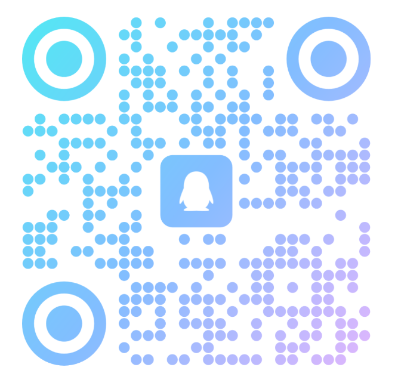

不是单一模型赌博，而是多个顶级AI模型组成的"交易委员会"，只有意见一致时才会下单。
GPT-4o、Claude、Gemini 三大模型同时解读同一张K线图。多头判断、空头信号、震荡识别——比单一模型更全面的市场视角。
AI-1 分析完信号后，AI-2 作为独立风控官进行二次复核。如果风险/回报不达标、或与趋势背离，直接否决——即使AI-1强烈看多也不执行。
第三层AI不间断监控持仓状态，动态调整止损止盈、分批止盈、移动保本。不是设好就不管，而是全程有人盯着。
内置多种预设策略，一键启动。懂编程的用户可以完全自定义策略、接入自己的Prompt和模型组合。真正从零基础到专业级都适用。
不是简单回测画曲线。内置Walk-Forward优化引擎和Monte Carlo模拟器，帮你理解策略在不同市场状态下的真实表现，而非过拟合的完美曲线。
最大回撤熔断、波动率动态仓位、阶梯式止损、每日盈亏上限——不是"赌方向"，而是"管风险"。先活着，再赚钱。
每笔交易必须经过三位独立AI的一一审核。意见一致→下单。意见分歧→放弃。这从根本上解决了单模型AI交易的"幻觉下单"问题。
GPT-4o / Claude / Gemini
多周期K线联合解读
趋势·支撑·形态·信号
独立风控模型
检验风险回报比
一票否决权
订单执行后全程追踪
动态止损·分批止盈
实时风控调整
XAUUSD 黄金直连
全自动无人值守
每笔订单有据可查
单个AI的分析结果就像一个人的观点——可能有偏见、可能"幻觉"、可能看漏关键信号。三个AI从不同角度独立分析，只有真正的交易机会才能通过全部审核。这就像三个老交易员同时看盘，而不是一个人说了算。
AI-1 看到强势突破信号建议追多，AI-2 发现R:R仅1:0.3且紧邻上方强阻力位→一票否决。行情随后冲高回落，追多者被套。这就是三审的价值。
我们定位为独立技术工具提供方——不推荐任何券商、不代客理财、不承诺收益。每一笔交易决策都有AI留下的完整分析日志。
AI-1的分析结论、AI-2的审核意见、AI-3的监控日志——完整的决策链路，不是"AI说买就买"。
不代理任何券商、不接触资金、不代客理财。我们只提供技术工具，交易决策和资金安全始终由你掌控。
AI交易不是印钞机。市场永远有风险。我们只会告诉你这套工具怎么做决策，不会告诉你"稳赚不赔"——因为没有人能做到。
不需要。内置预设策略和模型配置，开箱即用。如果你懂编程，可以深度自定义Prompt、策略逻辑和模型组合。
当前主攻 XAUUSD（黄金）。黄金趋势性强、流动性好，是AI量化交易最适合的品种之一。更多品种持续扩展中。
每笔分析约消耗数百Token，月成本通常在几十元以内。我们还提供独立的API中转站服务，比官方价格更低。
传统EA是固定规则的if-else机械执行。我们是让AI真正"看K线图"做分析决策，理解市场语境而非死守参数。
可以。只要电脑开着MT5就能运行。建议使用VPS实现24小时不间断运行，我们可提供一键部署方案。
我们不承诺收益。AI的决策质量取决于市场状态和模型能力。建议先通过内置回测+Walk-Forward+Monte Carlo充分验证后再小额实盘试用。
免费试用 · 1对1远程指导安装 · 不编程也能用
⚠️ 投资有风险，AI分析仅供参考，不承诺收益。过往表现不代表未来结果。
联系作者获取授权 →